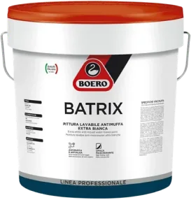
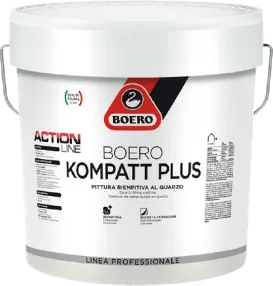
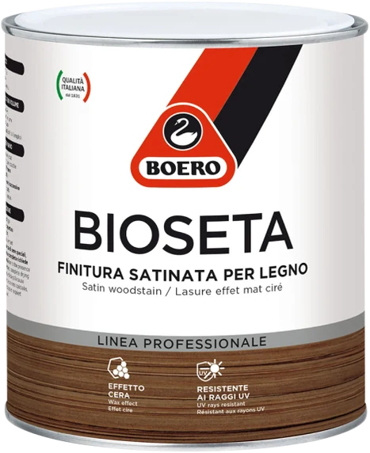
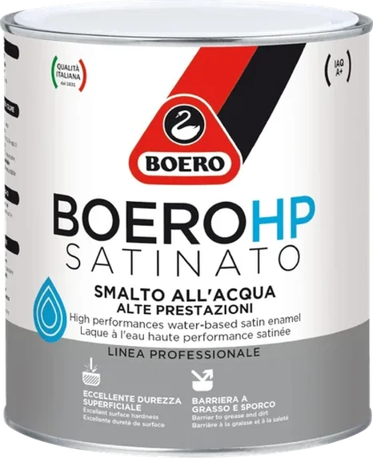
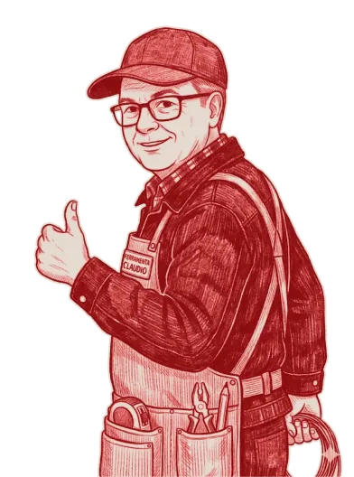

Antimuffa
Boero Batrix
Pittura lavabile extra bianca per cucina, bagno e camera. Si lava e resta bianca.
- Interni
- Lavabile
- Extra bianca
Prova una tinta: colore originale

Dal 1986 trovi al banco viteria, utensili, materiale elettrico ed edile. Al tintometro prepariamo pitture e smalti nella tinta che vuoi: provane qualcuna qui accantoqui sotto.
Provinciale Lecce-Vernole, 73029 Strudà (LE)
Lun – Ven 6:30–13:30 15:30–19:30 Sabato 6:30–13:30 · Domenica chiuso
Scegli tu per lui. Se ti piace, lo facciamo anche per casa tua.
Nero?Che noia!
Al tintometro coloriamo pitture e smalti Boero per interni ed esterni. Portaci un campione, una foto o un codice colore: lo riproduciamo.
Boero Batrix
Pittura lavabile extra bianca per cucina, bagno e camera. Si lava e resta bianca.
Prova una tinta: colore originale

Boero Kompatt Plus
Riempitiva per facciate: copre le piccole imperfezioni del muro. La coloriamo al tintometro nella tinta che scegli.
Prova una tinta: colore originale

Boero Bioseta
Finitura satinata per legno ad effetto cera: colora e protegge tavoli, porte, travi e persiane lasciando vedere le venature.
Prova una tinta: colore originale

Boero HP Satinato
Smalto all'acqua ad alte prestazioni per cancelli, ringhiere e arredi da giardino. Lo prepariamo al tintometro nella tinta che scegli.

Prova una tinta: colore originale
Dalla vite inox alla cassaforte, per il cantiere e per la casa. Ogni reparto ha il suo colore, come una mazzetta aperta sul banco.

Edilmarket è la ferramenta di Claudio Russo, a Strudà dal 1986. Artigiani, imprese e chi fa da sé trovano al banco il pezzo giusto e un consiglio pratico per usarlo.